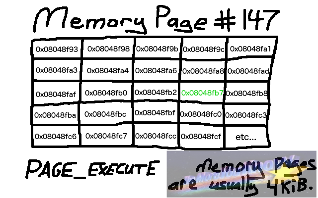

# VEH Hooking - PAGE_GUARD
PAGE_GUARD is a memory protection constant.
Whenever a memory page is accessed that has the PAGE_GUARD flag set, it causes a
STATUS_GUARD_PAGE_VIOLATION.
https://docs.microsoft.com/en-us/windows/win32/memory/memory-protection-constantsTo hook a function, you can set the PAGE_GUARD flag on the memory page in which your target function resides - e.g. MessageBoxA.
Now whenever MessageBoxA is called, it will cause a
STATUS_GUARD_PAGE_VIOLATION error and you can use your custom error handler to handle it and pass execution to your hook code.
## The problem with memory pages
A memory page is typically 4KiB in size.
Therefore, the page on which you set the PAGE_GUARD flag will contain other functions and code than just your
MessageBoxA target. As a result, you need to step through the entire memory page in order to reach the address that you want.
For example, pretend that
MessageBoxA is at
0x08048fb7.
The memory page starts at
0x08048f93.
Therfore, when the
STATUS_GUARD_PAGE_VIOLATION error occurs we'll be at the start of the memory page -
0x08048f93 - and have to step through it until we reach our target function (so that we don't hook any other functions) - MessageBoxA at
0x08048fb7.
To step through the memory page, within our custom exception handler we can:
• set the EFLAGS register to
SINGLE_STEP to next instruction
• continue execution
• our custom exception handler will catch the single step
• check if our current address is the address of MessageBoxA
◇ no? set
SINGLE_STEP in the EFLAGS register again and continue on
◇ yes? nice. we've found the address of MessageBoxA and can jump to our hook code
## Pros & Cons
+ Stealthy (used to be?)
- Execution is
very slow because of single-stepping through instructions
→ recommended for hooking functions which are infrequently called
## Demo
I'm hooking MessageBoxA.
Here are my calls:
• call MessageBoxA
• Hook MessageBoxA
• call MessageBoxA (will be hooked)
• call MessageBoxA (will be hooked)
• Unhook MessageBoxA
• call MessageBoxA (will NOT be hooked)
MessageBoxA(NULL, "i should greet myself", "hmm...", MB_OK);
PageGuardHook("User32.dll", "MessageBoxA", &hooked_MessageBoxA, &memprotect_MessageBoxA);
MessageBoxA(NULL, "hello", "hi #1", MB_OK);
MessageBoxA(NULL, "hello good sir", "hi #2", MB_OK);
PageGuardUnhook("User32.dll", "MessageBoxA", memprotect_MessageBoxA);
MessageBoxA(NULL, "was he listening?", "hmm...", MB_OK);
The first call to MessageBoxA isn't hooked.
Next the hook is inserted.
The next 2 calls to MessageBoxA get hooked, the hook is then removed, and we see our last MessageBoxA.
## Code
32bit version.
Tested on Windows 10 x64 2004.
Compiled as x86 debug.
/*
Hooks functions by creating a STATUS_GUARD_PAGE_VIOLATION exception and using a custom exception handler to handle it
(which will single step until it reaches your target function and modify the Instruction Pointer to point to your hook code)
*/
#include <stdio.h>
#include <Windows.h>
int (__stdcall* orig_MessageBoxA)(HWND hWnd, LPCSTR lpText, LPCSTR lpCaption, UINT uType);
int __stdcall hooked_MessageBoxA(HWND hWnd, LPCSTR lpText, LPCSTR lpCaption, UINT uType)
{
printf("MessageBoxA hooked! \n");
printf("\t lpText: %s \n", lpText);
printf("\t lpCaption: %s \n", lpCaption);
return orig_MessageBoxA(hWnd, lpText, lpCaption, uType);
}
/*
Custom exception handler for catching STATUS_GUARD_PAGE_VIOLATION and hooking functions.
First it catches access of PAGE_GUARD regions memory and sets the EFLAGS register to SINGLE_STEP.
It then catches SINGLE_STEP exceptions until we reach the address of the function we want to hook,
and modifies the IP - Instruction Pointer - to point to our hooked function instead of the original function.
*/
long CustomExceptionHandler(PEXCEPTION_POINTERS info)
{
DWORD exception = 0;
DWORD current_address = 0;
DWORD old_protect = 0;
exception = info->ExceptionRecord->ExceptionCode;
switch (exception)
{
case STATUS_GUARD_PAGE_VIOLATION:
current_address = info->ContextRecord->Eip;
// if our current address is the function we want to hook, modify EIP to point to our hooked function instead
if (current_address == (DWORD)&MessageBoxA)
info->ContextRecord->Eip = (DWORD)&hooked_MessageBoxA;
info->ContextRecord->EFlags |= 0x100; // enable a STATUS_SINGLE_STEP exception on the next instruction
return EXCEPTION_CONTINUE_EXECUTION; // continue executing
case STATUS_SINGLE_STEP:
// set PAGE_GUARD flag again (because hitting a PAGE_GUARD exception removes it) and continue executing
VirtualProtect((LPVOID)&MessageBoxA, 1, PAGE_EXECUTE_READ | PAGE_GUARD, &old_protect);
return EXCEPTION_CONTINUE_EXECUTION;
default:
break;
}
return EXCEPTION_CONTINUE_SEARCH;
}
/*
Locates your target function and sets the PAGE_GUARD flag on the memory page in which your function resides.
Whenever the function is accessed, it will cause STATUS_GUARD_PAGE_VIOLATION.
With a custom exception handler set up, you can catch the STATUS_GUARD_PAGE_VIOLATION, single step until you find the address of your target function,
and then modify EIP to point to your hook code.
*/
BOOL PageGuardHook(char* dll_name, char* function_name, void* hooked_function, void** p_orig_function, OUT DWORD* old_protect)
{
BOOL okay = TRUE;
BOOL b_ret = FALSE;
HMODULE hmod_dll = NULL;
LPVOID orig_function = NULL;
MEMORY_BASIC_INFORMATION mbi_orig = { 0 };
MEMORY_BASIC_INFORMATION mbi_hooked = { 0 };
printf("[+] hooking %s \n", function_name);
// grab address of function to hook
hmod_dll = LoadLibraryA(dll_name);
orig_function = GetProcAddress(hmod_dll, function_name);
if (orig_function == NULL)
{
printf("\t failed to find %s address: %d \n", function_name, GetLastError());
okay = FALSE;
return okay;
}
// check if target function and hook code are in same page
// you can't hook two functions in the same page because it will cause an infinite callback
VirtualQuery(orig_function, &mbi_orig, sizeof(mbi_orig));
VirtualQuery(hooked_function, &mbi_hooked, sizeof(mbi_hooked));
if (mbi_orig.BaseAddress == mbi_hooked.BaseAddress)
{
printf("\t this hook will cause an infinite loop. exiting \n");
okay = FALSE;
return okay;
}
// set PAGE_GUARD flag on memory page
b_ret = VirtualProtect(orig_function, 1, PAGE_EXECUTE_READ | PAGE_GUARD, old_protect);
if (b_ret == FALSE)
{
printf("\t failed to set PAGE_GUARD flag at 0x%p: %d \n", orig_function, GetLastError());
okay = FALSE;
return okay;
}
// Set pointer to original function to start address of target function + 2 (this will dodge hook redirection in exception handler and execute the original function)
*p_orig_function = (LPVOID)((DWORD)orig_function + 2);
return okay;
}
/*
Unhooks specific function by removing PAGE_GUARD flag from the memory page in which its contained.
*/
BOOL PageGuardUnhook(char* dll_name, char* function_name, DWORD old_protect)
{
BOOL okay = TRUE;
BOOL b_ret = FALSE;
HMODULE hmod_dll = NULL;
LPVOID orig_function = NULL;
DWORD page_guard_protect = 0;
printf("[+] unhooking %s \n", function_name);
// grab address of function to hook
hmod_dll = LoadLibraryA(dll_name);
orig_function = GetProcAddress(hmod_dll, function_name);
if (orig_function == NULL)
{
printf("\t failed to find %s address: %d \n", function_name, GetLastError());
okay = FALSE;
return okay;
}
// restore original protection on memory page (remove PAGE_GUARD flag)
b_ret = VirtualProtect(orig_function, 1, old_protect, &page_guard_protect);
if (b_ret == FALSE)
{
printf("\t failed to restore original memory protection at 0x%p: %d \n", orig_function, GetLastError());
okay = FALSE;
return okay;
}
return okay;
}
int main(void)
{
PVOID h_exception = NULL;
ULONG u_ret = 0;
DWORD memprotect_MessageBoxA = 0; // original memory protection on MessageBoxA page. value set by PageGuardHook(). used for PageGuardUnhook()
// Set custom exception handler (for hooking)
h_exception = AddVectoredExceptionHandler(1, (PVECTORED_EXCEPTION_HANDLER)CustomExceptionHandler);
if (h_exception == NULL)
{
printf("[-] failed to set custom exception handler \n");
return 1;
}
MessageBoxA(NULL, "i should greet myself", "hmm...", MB_OK);
PageGuardHook("User32.dll", "MessageBoxA", &hooked_MessageBoxA, (LPVOID)&orig_MessageBoxA, &memprotect_MessageBoxA);
MessageBoxA(NULL, "hello", "hi #1", MB_OK);
MessageBoxA(NULL, "hello good sir", "hi #2", MB_OK);
PageGuardUnhook("User32.dll", "MessageBoxA", memprotect_MessageBoxA);
MessageBoxA(NULL, "was he listening?", "hmm...", MB_OK);
// Remove custom exception handler
u_ret = RemoveVectoredExceptionHandler(h_exception);
if (u_ret == 0)
{
printf("[-] failed to remove custom exception handler \n");
return 1;
}
return 0;
}
{kind=link}